A cycle and women's health tracking app
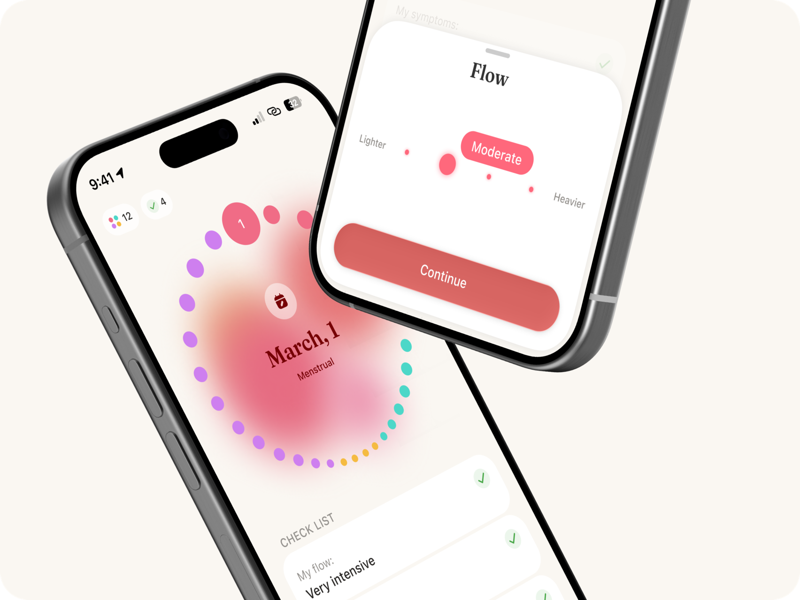
Lunel helps you understand your body. A daily log (bleeding, mood and energy, symptoms, notes), cycle-phase analytics, cards about hormones, Apple Health import and an export for your doctor. Personal insights are computed by the built-in Apple Intelligence model – right on the device, where it is supported. Everything works offline and without an account.
Personal project
Discovery and delivery are mine, the code is vibe coding with Claude Code
MVP
Built from scratch, MVP released on the App Store
8 languages
🇬🇧 🇩🇪 🇪🇸 🇲🇽 🇫🇷 🇵🇹 🇧🇷 🇷🇺
My role
Worked end-to-end: from the idea and research to design and release
• A personal project. I wanted to explore the health space and take an idea all the way to a competitive released product.
• Ran 4 in-depth interviews, studied open sources and articles, and store reviews.
• Defined the target audience, built job stories and insights.
• Framed the user and business problems. Matched ideas against technical constraints; at the intersection I formulated product hypotheses.
• Built the information and functional architecture, and the flows.
• Ran 4 UX tests to check the key hypotheses quickly.
• Worked out the visual concept, tone of voice and the design system: color tokens, typography, grid, components, icons, illustrations.
• During development I gave the agent the task and the acceptance criteria, Claude Code wrote the SwiftUI code, I reviewed it – and moved recurring requirements into skills.
• Released the MVP on the App Store.
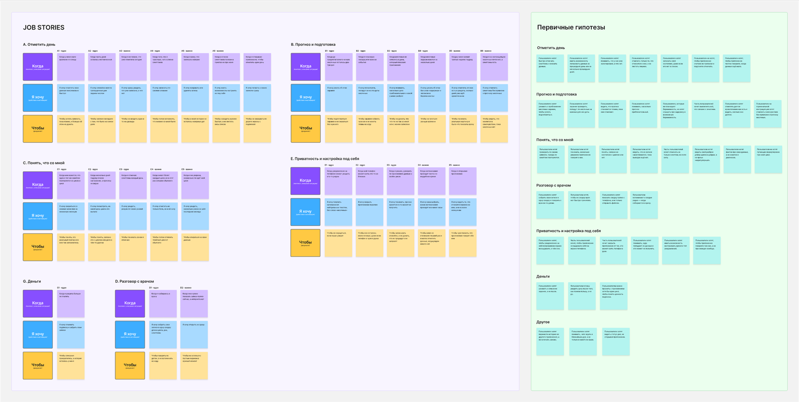
Audience
Women who want to understand their body and notice patterns and the dynamics of their symptoms
The working frame for the core is 20–55. They need to log how they feel quickly, see what repeats, and collect it into something a doctor can read. They are not looking for diagnoses or conception advice. Adjacent audiences come on their own but are not targeted: perimenopause, endometriosis and PCOS, teenagers.
Jobs
Job stories were the way I framed the key pains, expectations and barriers of the users.
When I am short on time and in a hurry, I want to log an entry fast, so that I can stop thinking about it
When it feels like the same symptom repeats cycle after cycle, I want to check it against my records, so that I stop worrying
When half of the symptom list is not about me, I want to tailor it to myself, so that I save time
When I log symptoms every day, I want to see the result of my effort, so that I understand why I keep logging
When I am going to see a doctor, I want to collect my records into one summary, so that I do not have to remember
When something hurts every cycle, I want to log not only the pain but its intensity, so that I can see the dynamics
+ 22 more
Key insight
What kills motivation is not how hard it is to log, but the silence that follows: the app has to answer every entry, adapt, and prompt
Competitors and market research
I analysed direct and indirect competitors, found out which features the market leaders have and which UX patterns are the standard. I singled out what makes each player unique.
Audience
What it is good for
USP
Monetization
Retention
Gamification
Ecosystem
Onboarding
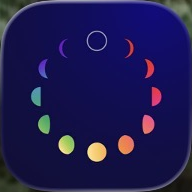
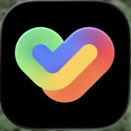
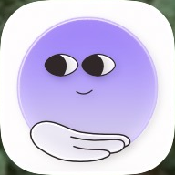
Business goal
Launch a private tracker that answers your entries, and sell a subscription to analytics, insights and export – with no brand, no paid traffic and no team.
Top problems
Trackers live on frequent input: to show something personalised you need a high density of data
If the value does not land right away, people will not pay. Or they cannot pay because of their age
If the app does not show that it adapts to her, she leaves silently
Content that is pushy and irrelevant to the user pushes her away
+ 5 more
Hypotheses
If we praise her right after an entry and show what new is now clear about her, then the daily log stops being a contribution to nowhere
Engagement, retention
If every conclusion shows how many more days or cycles she needs to log, then waiting becomes a clear deadline instead of silence
Time to value, retention
If the conclusion is built on the number of her own observations, trust will grow, because we have no editorial team and no doctors – the only thing that can back a conclusion is her own data
Retention
If we set up a two-way exchange with Apple Health, activation and retention will grow, because body signals cut the error roughly threefold
Activation, retention
+ 19 more
Information architecture and flows
Five sections: onboarding, home, calendar and day, trends, settings. The daily log is the most frequent scenario, so the day is collected on a single screen instead of a chain of forms. Onboarding is designed so that the product works even without answers: every question has an “I don't remember” option.
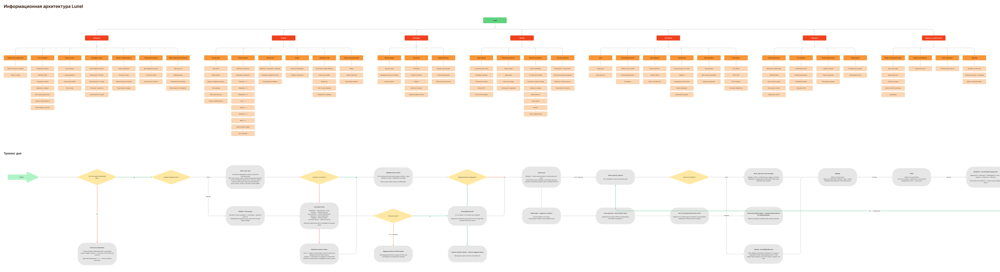
Home
The cycle ring shows where you are right now and which phase it is; you can move along it to any day that has passed. Under the ring is the tracking for that day: mood, discharge, symptoms, a note. Below that are the cards about the phase.
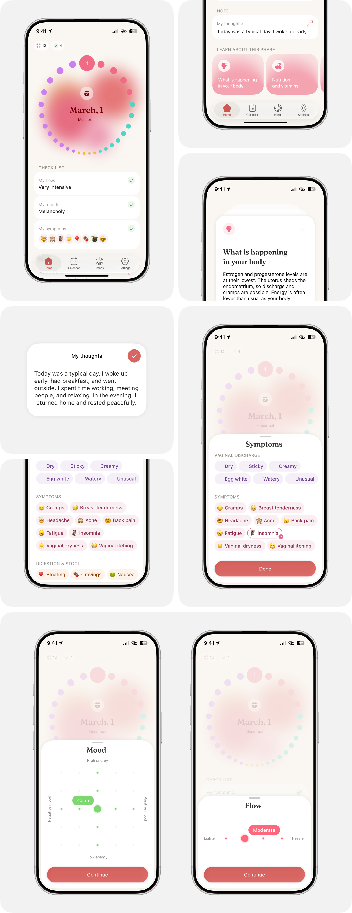
Calendar
History and forecast, marking the days where something has been logged. Pick a day and you can fill it in right there or look at what is already recorded.
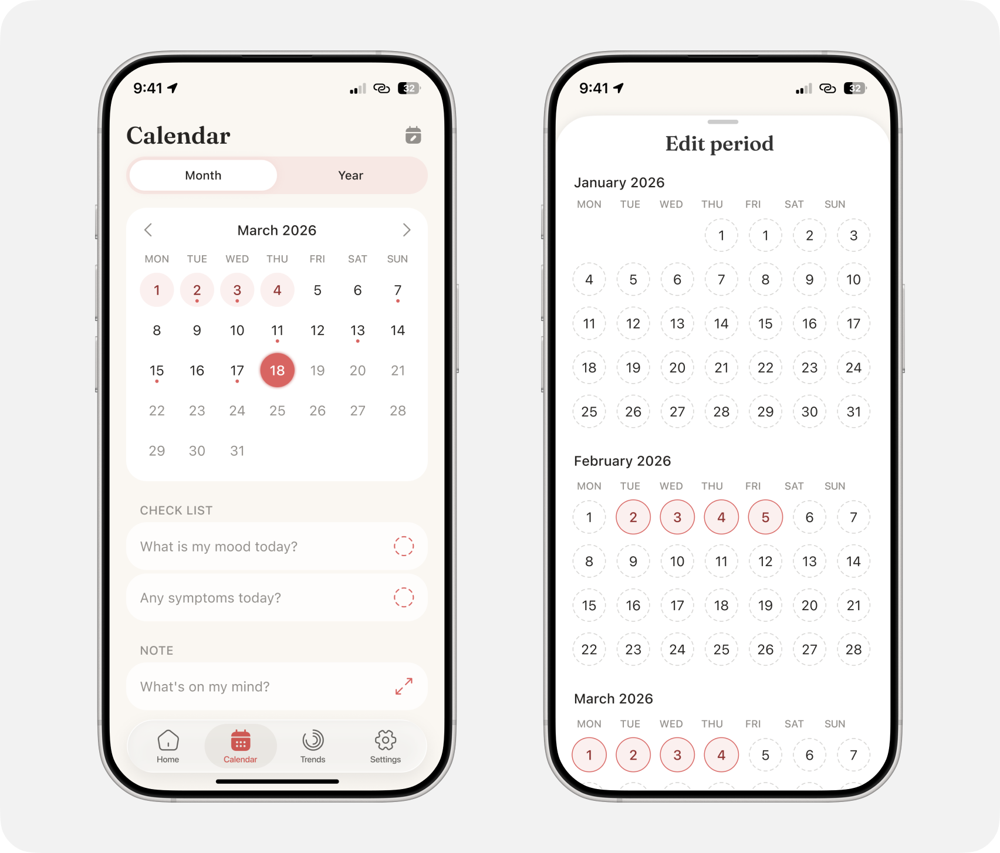
Trends
Analytics for the past year. A deck of full-screen cards: cycle and period length, discharge intensity, symptoms, mood and energy, activity, sex life. The cards describe what is visible in the data, without advice. Everything can be exported to PDF.
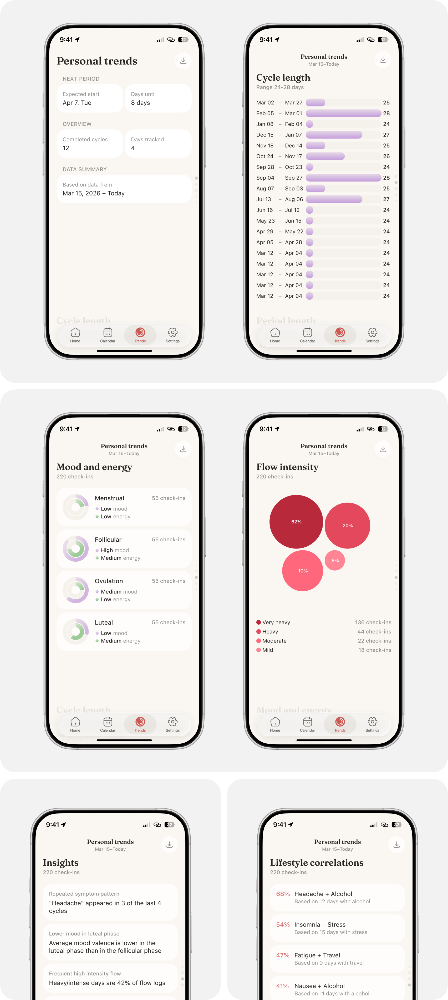
Paywall
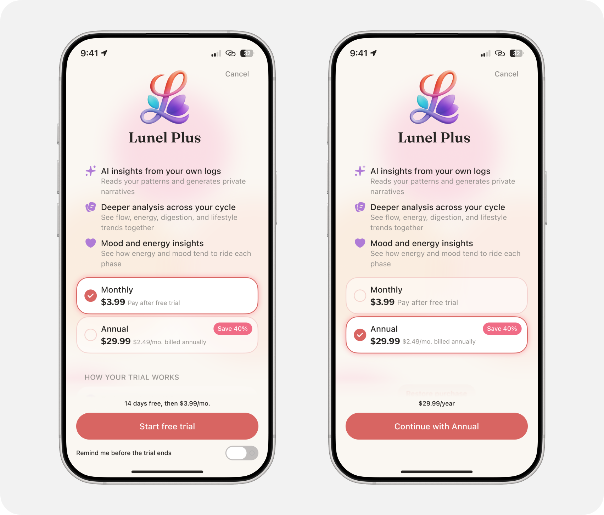
Building the design system
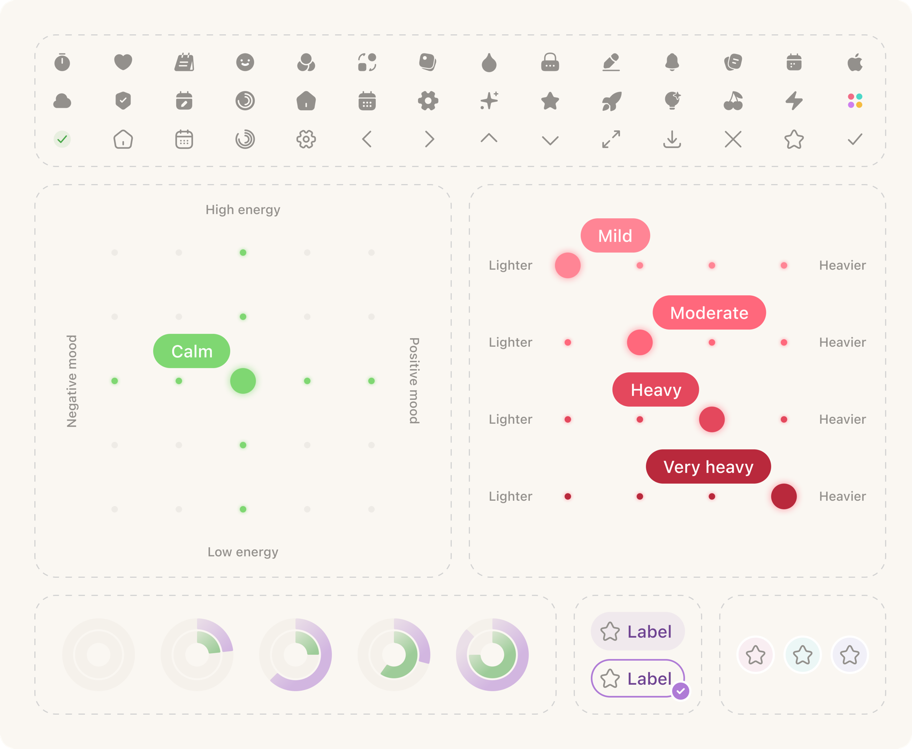
Result
MVP released on the App Store
A project from scratch
AI tooling built for the project
8 languages
🇬🇧 🇩🇪 🇪🇸 🇲🇽 🇫🇷 🇵🇹 🇧🇷 🇷🇺